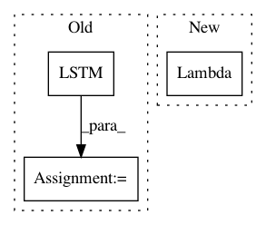

14a9d386baf93b8266fa21277b40d669a4e397d2,pyannote/audio/embedding/models.py,TristouNet,__call__,#TristouNet#Any#,83
Before Change
if self.bidirectional:
// first backward LSTM needs to be given the input shape
// AND to be told to process the sequence backward
backward = LSTM(name="backward_{i:d}".format(i=i),
go_backwards=True,
input_shape=input_shape,
output_dim=output_dim,
return_sequences=return_sequences,
activation="tanh",
dropout_W=0.0,
dropout_U=0.0)(x)
if self.pooling == "average":
forward = GlobalAveragePooling1D()(forward)
if self.bidirectional:
backward = GlobalAveragePooling1D()(backward)
// concatenate forward and backward
if self.bidirectional:
x = merge([forward, backward], mode="concat", concat_axis=1)
else:
x = forward
// stack dense layers
After Change
x = mlp(x)
// stack L2 normalization layer
normalize = Lambda(lambda x: K.l2_normalize(x, axis=-1),
name="normalize")
embeddings = normalize(x)
return Model(input=inputs, output=embeddings)
In pattern: SUPERPATTERN
Frequency: 3
Non-data size: 3
Instances
Project Name: pyannote/pyannote-audio
Commit Name: 14a9d386baf93b8266fa21277b40d669a4e397d2
Time: 2016-11-14
Author: hbredin@users.noreply.github.com
File Name: pyannote/audio/embedding/models.py
Class Name: TristouNet
Method Name: __call__
Project Name: pyannote/pyannote-audio
Commit Name: 47966c5e49342ef9ff53c6db75a4905ffe864e4d
Time: 2016-06-21
Author: bredin@limsi.fr
File Name: pyannote/audio/models.py
Class Name: TripletLossSequenceEmbedding
Method Name: _embedding
Project Name: pyannote/pyannote-audio
Commit Name: 1c7607eebdcaf1459d7dcf4f249cc1db7cd6f8dd
Time: 2016-06-20
Author: bredin@limsi.fr
File Name: pyannote/audio/models.py
Class Name: TripletLossSequenceEmbedding
Method Name: _embedding